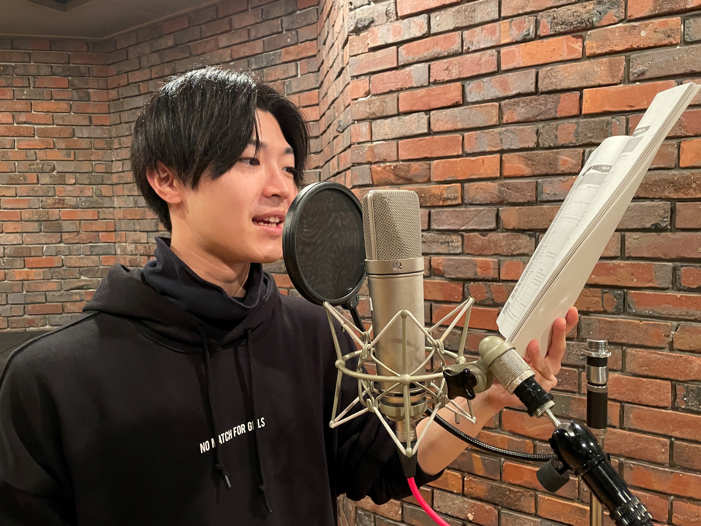
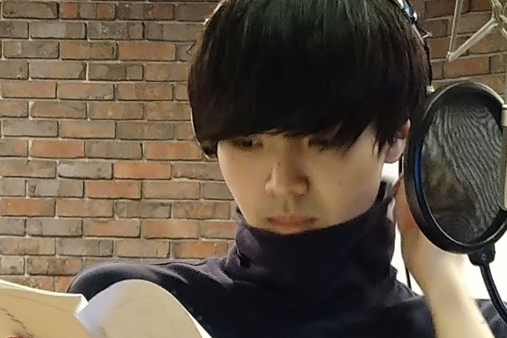
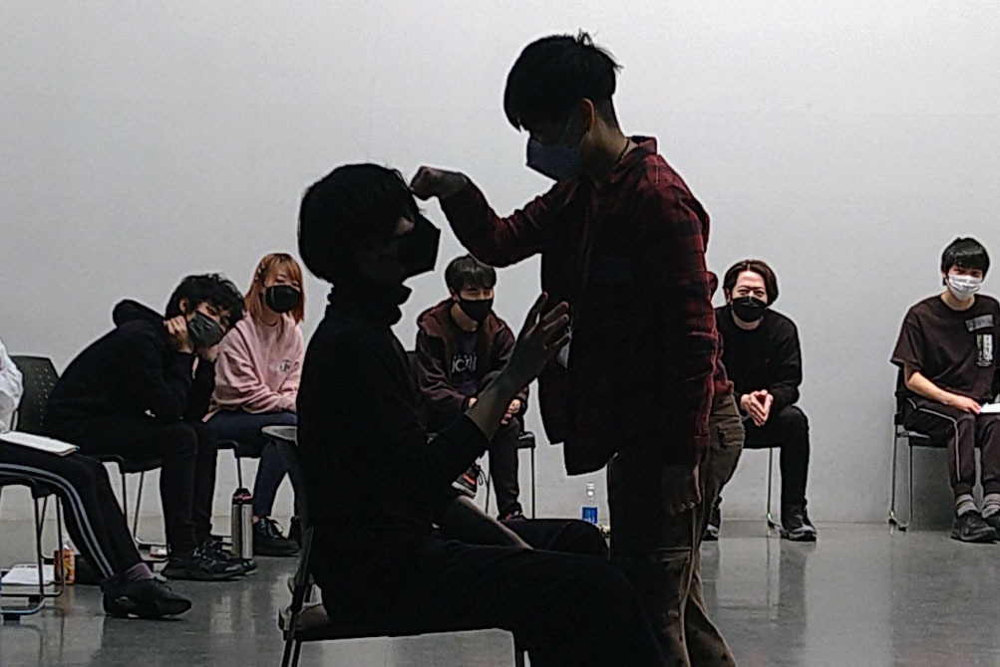
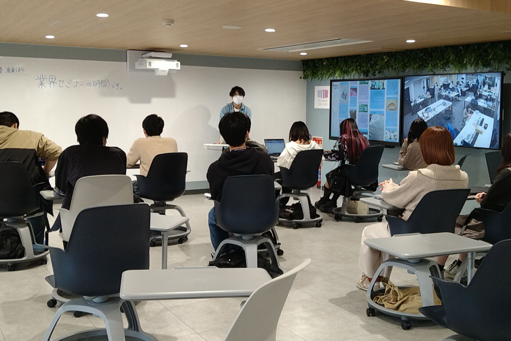

声優・演劇科
- 声優コース／俳優コース／大学コース
-
多様な出会いを通して
唯一無二の個性を磨き
多くの人々を惹きつける表現者になる - 声優・俳優にとって大切なのは、表現者として人々に感動を与える、伝える力をもつスペシャリストになることです。そのうえで社会に関心をもち、幅広い経験や知識を身につけ、社会課題を解決するワークショップの立ち上げなど幅広く活躍できる力を養います。
学びPICK UP!
TAP(Technos Art Program) のナレーション収録！！
今回は TAP(Technos Art Program) にて ナレーションを担当したO君の収録の様子を お届けしたいと思います！！ TAPとはテクノスカレッジの海外姉妹校の一つであるニューヨーク州立...
続きを読む- 【目指せる職種】
- アニメ声優／外画吹き替え声優／ナレーター／歌手／声優アイドル／2.5次元舞台俳優／ラジオパーソナリティ／イベントMC／舞台俳優／ドラマ俳優／映画俳優／タレント／舞台スタッフ 他
- 【主な所属先】
- ソニー・ミュージックアーティスツ／プロダクション・エース／アクロス／シグマ・セブン／81プロデュース／青二プロダクション／賢プロダクション／俳優座／文学座／青年座／演劇集団円／劇団NLT／劇団昴／オスカープロモーション／ジェイズプロデュース 他
- 【卒業生掲載作品・参加作品】
- 劇団昴「クリスマスキャロル」上林 未菜美／劇団獣申「しほうはっぽう」北原あい・廣田 翔・小池 桃加・尾澤 崚太・箕輪 絢香 他
声優コース
声優は役者である、という考えのもとに、身体表現、歌、演技をバランス良く学んでいきます。アフレコ実習やダンスなど多彩な授業により、業界で長く活躍できる声優を育成します。
俳優コース
自分の個性と資質を見つけ、磨き、技術やパフォーマンス力を習得。舞台、イベントに出演するなど本物の体験を積み重ねることで、多方面で活躍できる俳優(役者)をめざします。
大学コース
「演技を磨くために、幅広い教養を得たい！」「海外でも活躍したい！」そんな皆さんの憧れを叶えるために、テクノスの「知識・技術の専門性」と大学の「幅広い学問と教養」を学修します。
もっと大学コースを知りたい方はコチラ学びの特徴
未来を見据えた
学科オリジナルの学び
演劇の力で地域活性!
小金井市の地域住民を巻き込み
演劇ワークショップを開催
演劇の力で地域を笑顔にするために、小金井市の近隣住民を対象に演劇ワークショップを開催しています。子どもからお年寄りまで、幅広い年代の方々に好評いただき、表現の魅力を社会に発信しています。
分野の枠を超えて
表現が持つ可能性を考え
仲間たちと発表する
エンターテイメントとしてだけでなく、介護福祉や教育、医療など、演劇が持つ可能性について他分野での活用の機会を探求。チームで意見を交換し合ってプレゼン発表を行い、これからの表現のあり方を考えます。
身につけたスキルを
実践する学科ゼミ
基礎ゼミ
地域貢献としての演劇
演劇のパワーをエンターテイメントとしてだけでなく、介護福祉や教育、医療など他分野での活用の機会を探求し、チームにてプレゼン発表します。
応用ゼミ
パフォーマンスで社会貢献!!
日本含め世界で抱える問題・課題を探求し、プレゼン発表。自分たちだからできるチャレンジ、パフォーマンスを考案し、配信していきます。
身につける力&磨く力

自分自身と
プロジェクトを動かす
プロデュース力
世の中のニーズを捉えて自分をプロデュースする力は重要なポイントになります。また、演劇を通じて社会の中にある課題の解決へと導く力も養っていきます。

多様な価値観を理解し、
表現する
コミュニケーション力
海外の人々と協働する機会が増えつつある中、エンターティナーとしてグローバルな視野を持って活躍するための表現力、コミュニケーション力が必要です。

常に学び、
成長し続ける力
努力できることはどの業界でも必要な力ですが、特にエンターテイメント業界で活躍するためには、自分を進化、深化させるための向上心を欠かすことができません。
在学生レポート
在学生のキャンパスライフを覗いてみよう
学び最新TOPICS
一覧へ描けるキャリア
卒業後の自分をイメージして、
描きたいキャリアを実現しよう!
「卒後ビジョン」で未来を描き、
夢や目標に向けて学ぶのが、テクノスの学修スタイル。
5年後の「自分のありたい姿」を明確にすることで、
今の自分に必要な力がわかり、
学びのプランを立てやすくなります。
在学生の描いた卒後ビジョンを
自分の「卒後ビジョン」を描くことで、
奨学金にチャレンジできる入学方法＆試験
-
Technos
オーディション入学「卒後ビジョン」を用いたプレゼンテーション型の入学方法。評価に応じて「1年次の学費全額免除」等の支援が受けられます。
Technosオーディション
入学の詳細はコチラ -
特待生試験
「卒後ビジョン」を描くことで、どの入学方法を選択した方でも挑戦可能。評価に応じて、学費負担が軽減されます。
特待生試験の
詳細はコチラ
学生や教員と一緒に描く！ オープンキャンパスの
詳細はコチラ
卒業生レポート
社会で活躍する卒業生のキャリアを知ろう
学びを体験できる
オープンキャンパス
業界・学科
体験メニュー
-
リアルアフレコ＆ボイスサンプル収録体験♪
 録音スタジオでAIボイスの素材となるナレーションを収録！
-
キャラクターにいのちを吹き込もう！
 キャラクターに❝いのちを吹き込む❞とは？～ボイストレーニング、基礎レッスン、実践！AIにはできない表現の楽しさを体感しよう！
-
シアターゲームでコミュ力＆演技力、人間力を磨こう！
 シアターゲームとは～演技力向上の為だけでなく共感性やコミュ力アップの効果の高さから様々な場面で活用されています。自ら持っている能力を使ってその感覚を楽しみ、多様な価値観に触れよう！
-
俳優＆声優業界の今とこれから
 自己プロデュース力、就職にも活きるスキル、これからの俳優・声優業界の未来をみすえた生き方を探求しよう！
よくある質問
学科Q&A
高校生からの質問
- オープンキャンパスでの体験レッスンだけではなく、普段の授業のレッスンも見学することが出来ますか?
-
普段のレッスンを見学したい場合、予めご連絡頂けましたら授業見学、もしくは体験出来るようご案内致します。
- 演技以外の勉強がしたいのですが
-
本校声優・演劇科では演技だけでなく、プロの講師による歌唱指導、ダンスレッスン、さらにはオーディション対策講座やマナープロトコール検定3級取得を目指したマナー講座があります。また、テクノスの学びは学科のことだけに留まらず、「こんな事をしたい。学びたい。」が在学中にあればいつでも教職員にご相談下さい。その挑戦のお手伝いをします。
- 途中でコースを変えることは出来ますか?
-
出来ます。また、2年生に進級する際も再度コース変更希望の聞き取り調査をします。
- 専門学校に通えばデビューすることは出来ますか?
-
芸能事務所、劇団をお招きしての学内オーディションが年に数回あります。その他にも在学中からいろいろなオーディションへ参加することができますのでチャンスは沢山あります。レッスンに真剣に取り組んで準備をしましょう。
- 2年間の専門課程と4年間の大学コース、どちらに通うか迷っています。
-
2年間で集中して専門スキルを身に付け、早速社会で活躍したい人は2年間の専門課程を。4年間音楽を学びながら、大学の学びで得られる教養も同時に身に着け、今後のキャリアの可能性や選択肢を膨らませたい人は4年間の大学コースをおすすめします。大学コースを選択した場合、専門士と学士の両方の資格が取得できます。
- 養成所と専門学校、どちらに通うか悩んでいます。
-
どちらに通ってもお芝居の勉強は出来ますので一概にどちらがいいとは言えません。ですが、毎日自分の好きな勉強が出来るのが専門学校です。学生であれば時間を掛けて結果だけでなく過程も大切にして勉強することが出来ます。またデビューのサポートが手厚いのも専門学校の魅力の一つです。
保護者からの質問
- 普段の学校の様子、授業は見ることが出来ますか?
-
普段の学校の様子や授業見学をされる場合、予めご連絡頂けましたらいつでもご案内致します。
- 演劇や声優の事だけ学ばせることに、将来の不安があります。
-
本校声優・演劇科では、学科の学びだけでなく、ビジネススキルやマナープロトコール検定3級取得を目指したマナー講座があります。また学科に留まらず、テクノスカレッジの多様な学びが得られます。「こんな事をしたい。学びたい。」があればいつでも教職員に相談するよう、お子さんにご提案ください。その挑戦のお手伝いをいたします。
- 専門学校と大学、どちらに通わせるか迷っています。
-
大学コースを選択した場合、専門士と学士の資格が取得できます。専門学校2年間で集中してスキルを身に付け早く現場に出たいのか、4年間で学びを深め、さらなる成長と可能性を膨らませ、選択肢を増やしていくのか、お子さんの考えやビジョンをしっかり聞いてみてください。